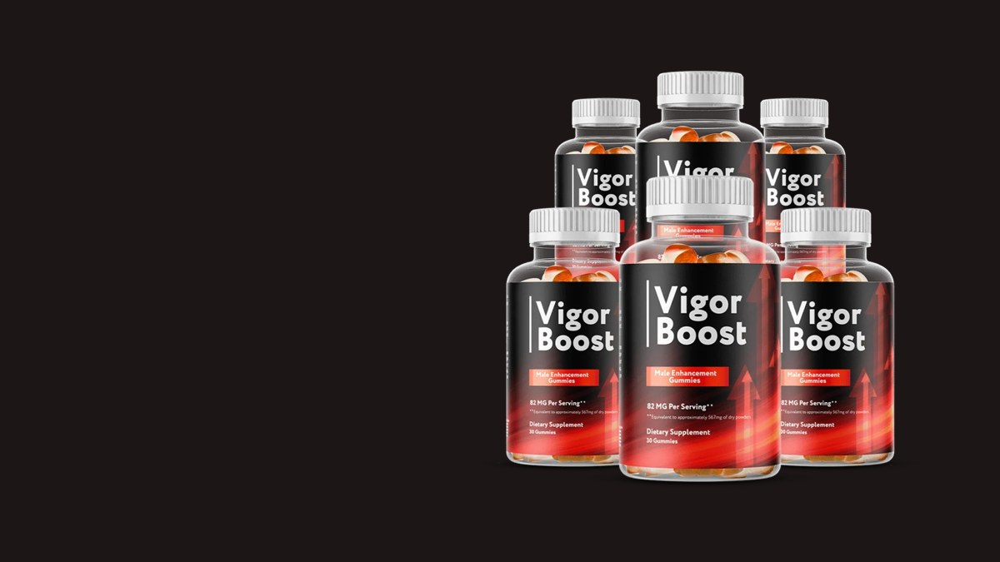
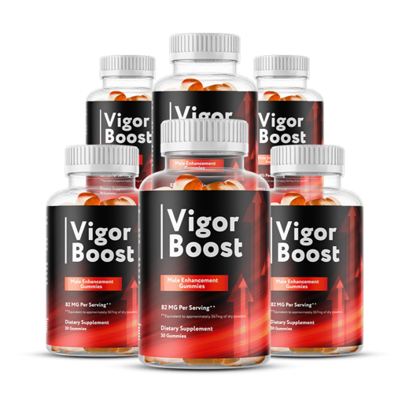
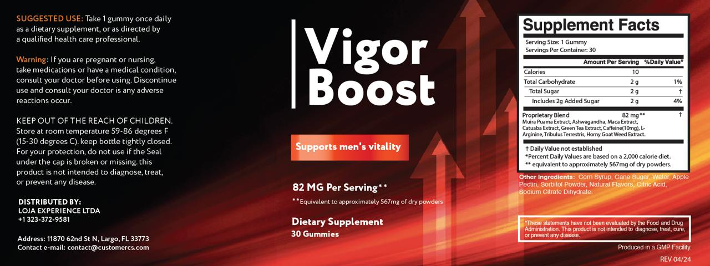
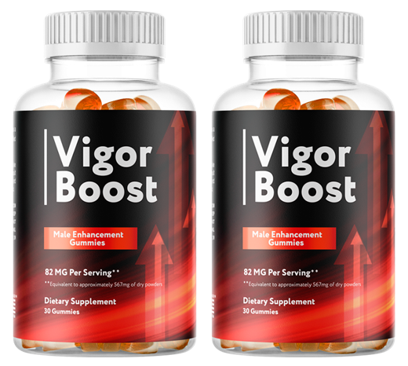
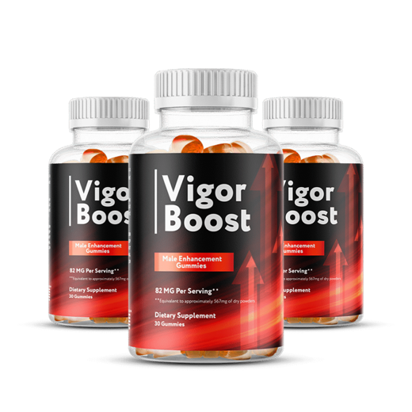

Vigor Boost Reviews: What the Gummy Label Really Tells You
Nine botanicals and amino acids, one 82 mg blend, one gummy a day. We read the Supplement Facts panel line by line, did the math the label leaves out, and priced it per day.

Key takeaways
- It's a once-daily gummy for men's energy and vitality. Nine ingredients share one 82 mg proprietary blend, with 10 mg of caffeine as the only amount printed on its own.
- The blend is small. Studied doses of maca run 1,500 to 3,000 mg and ashwagandha 300 to 600 mg. The whole gummy holds 82 mg of actives.
- There's no clinical trial on the product. The ingredients have traditional use and a mixed research record, mostly at far larger doses.
- Cost runs about $1.63 to $2.63 a day depending on the pack, based on prices published at the time of writing, with a 60-day money-back guarantee and no subscription.
- It doesn't treat erectile dysfunction. New or lasting erection problems call for a doctor, because they can be an early sign of heart disease, diabetes or low testosterone.
Vigor Boost is a once-daily gummy sold for men's energy, stamina and vitality. Each gummy holds an 82 mg proprietary blend of muira puama, ashwagandha, maca, catuaba, green tea, caffeine (10 mg), L-arginine, tribulus and horny goat weed. The ingredients have traditional use, but the doses are small and the finished product hasn't been clinically tested.
That's the short version of most honest Vigor Boost reviews. The long version is below: what the Supplement Facts panel says, what it leaves out, how far each ingredient sits from the amounts used in research, what a day of it costs and who shouldn't take it at all. We haven't run a trial of our own, and we don't publish customer star ratings. Everything here comes from the label and the published research on the ingredients.

Vigor Boost: check today's price
A once-daily men's vitality gummy with maca, muira puama, tribulus and horny goat weed. Sold only on the official site, with a 60-day money-back guarantee.
See the official price →What is Vigor Boost?
Vigor Boost is a dietary supplement in gummy form. The bottle holds 30 gummies, and the suggested use is one a day, so a bottle lasts a month. The front panel says it "supports men's vitality." It doesn't claim to treat any condition, and the label carries the standard FDA disclaimer saying the statements haven't been evaluated.
The distributor printed on the bottle is Loja Experience Ltda in Largo, Florida, with a US phone number and a customer service email. The label also says the gummies are produced in a GMP facility, which refers to the FDA's current good manufacturing practice rules for supplements. That's a baseline, not a quality award, but a named distributor with contact details is more than many products in this aisle offer.
The formula leans on herbs with long folk histories in South America, Asia and India. Two of them, muira puama and catuaba, are Brazilian barks sold as tonics for generations. Maca comes from the Andes. Horny goat weed and tribulus show up in traditional Chinese and Ayurvedic practice. Ashwagandha is the Ayurvedic stress herb that now turns up in everything from sleep aids to pre-workouts.
What's in Vigor Boost gummies?
Here's the full Supplement Facts panel as published at the time of writing. Supplement companies can change formulas, so compare it with the bottle you actually receive.

| Label line | Per gummy | What it tells you |
|---|---|---|
| Calories | 10 | About what you'd expect from a small gummy |
| Total carbohydrate / sugar | 2 g, all added (4% DV) | Corn syrup and cane sugar are the first two inactive ingredients |
| Proprietary blend | 82 mg | Total weight of all nine actives combined |
| Caffeine (inside the blend) | 10 mg | The only ingredient with its own amount |
| Other eight actives | Not disclosed | Muira puama, ashwagandha, maca, catuaba, green tea, L-arginine, tribulus, horny goat weed |
| Raw-herb equivalence | About 567 mg of dry powders | A conversion back to the plant material used, not what you swallow |
| Gelling agent | Apple pectin | Plant-based, not gelatin |
Other ingredients are corn syrup, cane sugar, water, apple pectin, sorbitol powder, natural flavors, citric acid and sodium citrate dihydrate. Nothing on that list is unusual for a gummy. Our Vigor Boost ingredients breakdown goes through each of the nine actives in much more depth than this review can.
How much of each ingredient do you actually get?
The label won't tell you directly. A proprietary blend discloses the total weight and the names, but not how the total is split. So nobody outside the company can check each dose against the research.
You can still put limits on it. FDA labeling rules require ingredients in a proprietary blend to be listed in descending order by weight. Caffeine is sixth on the list and printed at 10 mg. That means the five ingredients above it weigh at least 10 mg each, and the three below it weigh 10 mg or less each. Subtract caffeine from 82 mg and 72 mg remains for the other eight.
Run that arithmetic and the ceilings get tight. Muira puama, listed first, can't exceed about 32 mg. Ashwagandha, second, tops out near 21 mg. Maca, third, is capped around 17 mg. L-arginine, tribulus and horny goat weed sit at 10 mg or less apiece. These are upper limits, not the real split, which the company hasn't published.
What does "equivalent to 567 mg of dry powders" mean?
It's a raw-herb conversion. Botanical extracts are concentrated, so a 10:1 extract means ten parts of dried plant went into one part of extract. Multiply each extract back by its ratio and 82 mg of extracts can be described as roughly 567 mg of starting material, an average ratio of about 7 to 1.
That number doesn't mean you swallow 567 mg of anything. You swallow 82 mg of actives. Caffeine and L-arginine are pure compounds with no raw-herb equivalent, so the multiplier only applies to the botanicals. And even taken at face value, 567 mg of dried plant is well under the 1,500 to 3,000 mg of powdered maca root used in human studies, before you divide it among nine ingredients.
Does Vigor Boost work? What the evidence supports
Two kinds of evidence get blurred in supplement marketing. One is research on an ingredient. The other is research on the finished product. Vigor Boost has the first kind only, and that research mostly uses doses many times larger than what a gummy can carry.
- Maca. Small randomized trials found modest improvements in self-reported sexual desire after several weeks at 1.5 to 3 g a day, without changes in testosterone. A systematic review called the evidence limited.
- Ashwagandha. Trials at 300 to 600 mg of root extract daily report lower perceived stress and better sleep, and a few found small testosterone changes in men. More in our ashwagandha guide.
- Tribulus. Controlled studies in healthy men generally haven't found a testosterone increase. Results on libido are mixed.
- Horny goat weed. Its compound icariin shows activity in lab studies. Good human trials are scarce.
- Muira puama and catuaba. Long traditional use, very little modern clinical data.
- L-arginine. Studied for blood flow at several grams a day. Ten milligrams or less is a rounding error next to what food already supplies.
- Green tea and caffeine. Ten milligrams of caffeine is about what a cup of decaf coffee holds. Mild at most.
So what can it realistically do? A small daily dose of familiar botanicals with a touch of caffeine is unlikely to cause harm in healthy men, and some people may feel a little more alert. We can't point to evidence that this formula, at this dose, changes stamina, libido or hormones. If you want the deeper evidence review, read does Vigor Boost work.
How much does Vigor Boost cost per day?
The official store sold three package sizes at the time of writing. Prices can change, so treat these as a snapshot and check the official page for the current offer.

2 Bottles · Starter $79/bottle Check Availability → + shipping 6 Bottles · Best Value $49/bottle Claim Discount → Free US Shipping
3 Bottles · Popular $69/bottle Claim Discount → Free US ShippingPrices shown are the manufacturer's published rates at the time of writing and can change without notice.
One gummy a day and 30 per bottle keeps the math simple. Two bottles at $79 each come to $158 for 60 days, about $2.63 a day plus shipping. Three bottles at $69 each total $207 for 90 days, or $2.30 a day with free US shipping. Six bottles at $49 each total $294 for 180 days, about $1.63 a day, also with free shipping.
Every package is a one-time charge. There's no autoship or subscription listed on the official order page, which removes the most common complaint in this category: surprise monthly billing. Our Vigor Boost price guide walks through which pack makes sense for a first order.
What is the Vigor Boost refund policy?
Orders placed through the official checkout carry a 60-day money-back guarantee. That window matters more than any marketing claim, because it's the only practical way to find out whether the gummy does anything for you.
Before ordering, read the current refund terms on the official site. Look for whether you need to return bottles, including empty ones, who pays return shipping and how to start a request. Keep your order confirmation email. Orders from third-party sellers generally aren't covered by the manufacturer's guarantee, which is one more reason to buy from the official page only.
How to run a fair test inside 60 days
Pick two or three things you can actually rate, such as afternoon energy, sleep quality and interest in sex, and score each from 1 to 10 for a week before you start. Then take one gummy every morning and score the same things weekly. Keep coffee, alcohol and bedtime roughly steady, or you won't know what changed what.
Around day 45, compare the numbers. No clear change? Request the refund while there's still time to ship bottles back. A vague sense of feeling better is easy to talk yourself into. Written scores are harder to fool.
Vigor Boost side effects: who should skip it?
At these amounts, most healthy adults are unlikely to notice side effects. Ten milligrams of caffeine is small, and the herbs are present in the low milligrams. But low isn't zero, and a few groups should talk to a doctor first or pass.
- Men on nitrates, ED medications or blood pressure drugs. L-arginine and horny goat weed act on blood vessels. The amounts here are tiny, but the combination deserves a doctor's view.
- Anyone with thyroid disease or liver problems. Ashwagandha can affect thyroid hormone levels, and rare cases of liver injury have been reported with ashwagandha supplements.
- People on sedatives, diabetes drugs or immune-suppressing medication. Ashwagandha may interact with all three.
- Caffeine-sensitive people. Small, but it stacks with coffee, tea and energy drinks.
- Anyone tracking sugar. Each gummy adds 2 g of added sugar.
Most important of all: if you're looking at this product because erections have become unreliable, see a doctor first. Erectile problems can show up years before a heart attack, because the small vessels involved narrow early. Diabetes, high blood pressure, sleep apnea and low testosterone are other common causes, and all of them are treatable. Our piece on low testosterone in men covers the symptoms worth a blood test. The full list of interactions is in our Vigor Boost side effects guide.
Is Vigor Boost the same as HorseBoost?
Nearly. HorseBoost, a strawberry gummy sold by a related Florida company, uses the same 82 mg blend with the same nine ingredients. The differences are small: HorseBoost lists 5 mg of caffeine instead of 10 mg and 3 g of sugar instead of 2 g, and it's strawberry flavored. If you're comparing the two, you're mostly comparing flavor, caffeine and price, not formulas. Our Vigor Boost vs HorseBoost comparison lays it out side by side.
Vigor Boost pros and cons
| Pros | Cons |
|---|---|
| One gummy a day, easy to remember | Proprietary blend hides eight of nine doses |
| Named US distributor with phone and email | Total actives of 82 mg sit far below research doses |
| Low caffeine (10 mg), unlikely to cause jitters | No clinical trial on the finished product |
| Plant-based pectin, no gelatin | 2 g of added sugar per gummy |
| 60-day money-back guarantee, no subscription | Costs more per day than single-ingredient options |
| Familiar, widely used botanicals | Not a treatment for erection problems |
Vigor Boost reviews: our verdict
Vigor Boost is a convenient, low-dose blend of popular men's vitality herbs in a gummy you'll actually remember to take. The label is honest about its structure, the distributor is identifiable and the 60-day guarantee lets you test it without a long commitment.
The weakness is the dose. With 82 mg split nine ways, no ingredient can reach the amounts used in the studies people cite for maca, ashwagandha or arginine. The 567 mg figure sounds bigger, but it describes plant material before extraction, not what ends up in the gummy. Expect a mild product, not a dramatic one.
Who might reasonably try it? A healthy man who wants an easy daily habit, isn't on interacting medications, doesn't mind 2 g of sugar and is willing to judge it honestly within the 60-day window. Who shouldn't? Anyone with new erection problems who hasn't seen a doctor, anyone on nitrates or ED drugs without medical sign-off and anyone who wants every milligram printed. More on the men's health side of things lives in our men's health section.
Vigor Boost: check today's price
A once-daily men's vitality gummy with maca, muira puama, tribulus and horny goat weed. Sold only on the official site, with a 60-day money-back guarantee.
See the official price →Frequently asked questions
Is Vigor Boost a scam?
We found nothing that suggests a scam. The label lists its ingredients and blend total, names a Florida distributor with a phone number and email, and orders through the official checkout carry a 60-day money-back guarantee. The fair criticism is a small, undisclosed dose split, not fraud.
Are there real customer reviews of Vigor Boost?
We don't publish star ratings or testimonials, because we can't verify them. Many review pages online are affiliate content. Judge the product by its label and the refund terms, and use the 60-day guarantee as your own trial.
Is Vigor Boost sold on Amazon or at Walmart?
The product is sold through its official website. Listings elsewhere may not be genuine and generally aren't covered by the manufacturer's 60-day guarantee, so buying from the official page is the safer option.
Does Vigor Boost raise testosterone?
There's no evidence that it does. Maca trials showed no testosterone change, tribulus studies in healthy men have mostly been negative, and ashwagandha's small effects were seen at doses far above what this gummy can contain. If you suspect low testosterone, a blood test is the way to find out.
When should I take the gummy?
The label says one gummy once daily. Because it contains 10 mg of caffeine, taking it in the morning or early afternoon makes sense if you're sensitive to stimulants.
Is Vigor Boost vegan?
The gummy uses apple pectin instead of gelatin, so it isn't made with animal-derived gelling agents. The label doesn't carry a vegan certification, so contact the distributor if that matters to you.
Can I take Vigor Boost with my blood pressure medication?
Ask your doctor first. L-arginine and horny goat weed both act on blood vessels, and even small amounts are worth a check when you take blood pressure drugs, nitrates or ED medication.
Does Vigor Boost contain hidden drugs?
We have no evidence that it does. The label lists only herbal ingredients, caffeine and L-arginine. The FDA has found hidden prescription drugs in many sexual enhancement products, which is why a clear label and an identifiable distributor matter.
Read the label. Then decide.
One gummy a day, a published blend and a 60-day money-back guarantee. Check the current package prices on the official Vigor Boost page.
See Vigor Boost's official price →Related: Low testosterone in men